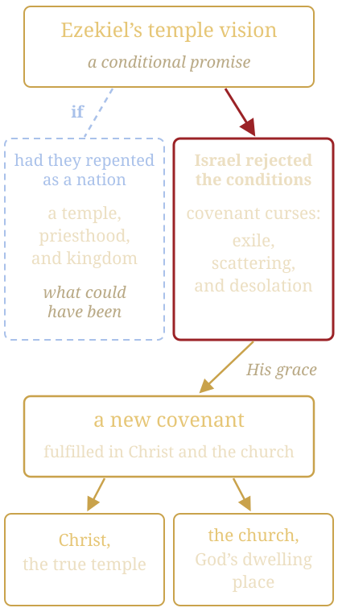

OT Prophecy: God’s Grace in a Conditional Promise
Ezekiel’s temple vision, the Mosaic Covenant, and why New Testament prophecy takes precedence
✦ ✦ ✦Use the arrow keys or swipe to move. Tap any gold reference to read the verse.
God’s Grace in Offering a Conditional Promise
The conditional nature of Ezekiel’s temple vision () reflects God’s grace in extending an opportunity for national repentance, despite His foreknowledge of Israel’s failure.
Thou son of man, shew the house to the house of Israel, that they may be ashamed of their iniquities: and let them measure the pattern. And if they be ashamed of all that they have done, shew them the form of the house, and the fashion thereof, and the goings out thereof, and the comings in thereof, and all the forms thereof, and all the ordinances thereof, and all the forms thereof, and all the laws thereof: and write it in their sight, that they may keep the whole form thereof, and all the ordinances thereof, and do them.Ezekiel 43:10-11
This aligns with the Mosaic Covenant at Mount Sinai (; ), which offered blessings for obedience and curses for disobedience, culminating in the call to “choose life” ().
God’s Grace Is Evident in Several Ways
Opportunity Despite Foreknowledge
God knew Israel would “go a whoring after their idols” (; ), yet He provided a vision of restoration: a temple, priesthood, and kingdom where the Messiah would rule (). This demonstrates His longsuffering and desire for repentance (), offering Israel a path to blessing even after their covenant-breaking in the wilderness, monarchy, and exile.
Conditional Framework as Grace
The conditionality in and underscores God’s willingness to restore Israel fully, had they repented as a nation. This mirrors His grace in earlier calls to repentance (e.g., ), showing that God’s promises were not revoked arbitrarily but depended on Israel’s response.
Lamentable Loss
The unfulfilled vision is a poignant reminder of what could have been: a literal OT kingdom with Christ as king and priest (). God’s grace shines through in offering this glorious future, yet Israel’s rejection () highlights the tragedy of their choice, making the outcome “lamentable” yet consistent with God’s justice.
“If ye will diligently obey”
And if they be ashamed of all that they have done, shew them the form of the house, and the fashion thereof, and the goings out thereof, and the comings in thereof, and all the forms thereof, and all the ordinances thereof, and all the forms thereof, and all the laws thereof: and write it in their sight, that they may keep the whole form thereof, and all the ordinances thereof, and do them.Ezekiel 43:11
And they that are far off shall come and build in the temple of the Lord, and ye shall know that the Lord of hosts hath sent me unto you. And this shall come to pass, if ye will diligently obey the voice of the Lord your God.Zechariah 6:15
This perspective frames OT end-times prophecy as an expression of divine grace, where God extends hope to a rebellious nation, knowing they would likely choose poorly but still providing a pathway to restoration.
What Could Have Been

Implications for OT End-Times Prophecy
The conditional nature of Ezekiel 40-48 reshapes how we interpret OT end-times prophecy, particularly from a non-dispensationalist, post-tribulation perspective.
Conditionality in OT Prophecy
Many OT prophecies, such as those in Ezekiel, Isaiah (e.g., ), and Zechariah, carry implicit or explicit conditions tied to the Mosaic Covenant. For example, links the Messiah’s temple to obedience, suggesting that prophecies of a restored kingdom were not guaranteed but contingent. This challenges literalist interpretations that expect a future fulfillment without acknowledging Israel’s covenant failure.
Curses, Then a Spiritual Fulfillment
Non-Fulfillment as Fulfillment of Curses
Israel’s failure to meet the conditions (e.g., ; ) led to the activation of covenant curses: exile, scattering, and desolation (; ). The absence of Ezekiel’s temple in history confirms the covenant’s consequences, not a postponement of prophecy (as dispensationalism might argue). Instead, God’s justice upheld the covenant terms, while His grace prepared a new covenant.
Shift to Spiritual Fulfillment
Because Israel rejected the conditions, OT prophecies like Ezekiel’s temple find their ultimate fulfillment in Christ and the church, not a restored national Israel. For instance, the promise of God’s presence in the temple () is fulfilled in Christ as the true temple () and the church as God’s dwelling place (). This aligns with a post-tribulation view that sees end-times prophecy culminating in Christ’s return, not a separate Jewish dispensation.
Why NT Prophecy Differs and Takes Precedence
The NT’s prophetic framework differs from the OT’s “glass darkly” prophecy () because it reveals God’s ultimate plan through Christ, superseding the conditional and shadowy nature of OT promises.
Clarity of the New Covenant
The OT, seen “through a glass, darkly,” offered prophecies bound to the Mosaic Covenant, which was “ready to vanish away” (). declares:
For there is verily a disannulling of the commandment going before for the weakness and unprofitableness thereof. For the law made nothing perfect, but the bringing in of a better hope did; by the which we draw nigh unto God.Hebrews 7:18-19
NT prophecy, rooted in Christ’s finished work (), provides a clearer revelation of God’s eternal plan, no longer conditional but guaranteed by Christ’s obedience ().
Christ as Fulfillment
NT prophecy reinterprets OT visions in light of Christ. For example, Ezekiel’s temple, unbuilt due to Israel’s failure, finds its fulfillment in Jesus, who is both temple and high priest (). The NT emphasizes a spiritual kingdom () and a future consummation at Christ’s return (), not a restored OT system. This aligns with a pre-wrath, post-tribulation view that expects one return of Christ to judge, resurrect, and establish the eternal kingdom, not a separate Jewish millennium.
Superseding the Mosaic System
declares:
Then said he, Lo, I come to do thy will, O God. He taketh away the first, that he may establish the second.Hebrews 10:9
The Mosaic Covenant’s sacrifices and temple were shadows (), pointing to Christ’s once-for-all atonement (). OT prophecies like Ezekiel 40-48, tied to that system, are fulfilled in Christ’s redemptive work, not a future literal temple, which would contradict the NT’s emphasis on the finality of His sacrifice.
Glass Darkly vs. Face to Face
The OT’s “darkly” prophecies were limited by their context under the law, often veiled in types and shadows (). The NT, through the Spirit, reveals the mystery of Christ and the church (), providing a clearer eschatological vision.
For example, states there is “no temple” in the New Jerusalem, superseding Ezekiel’s vision:
And I saw no temple therein: for the Lord God Almighty and the Lamb are the temple of it.Revelation 21:22
God’s Grace and the Call to Choose Life Today
The conditional nature of Ezekiel’s vision underscores God’s grace in offering Israel a chance to repent, despite their foreknown rebellion. This grace extends to all humanity through the new covenant.
’s call to “choose life” finds its ultimate fulfillment in choosing Christ, who is “the way, the truth, and the life” (). The lamentable failure of Israel serves as a warning:
For if God spared not the natural branches, take heed lest he also spare not thee.Romans 11:21
Yet, God’s grace ensures salvation through faith in Christ, not the works of the law ().
God’s Sovereignty Over Human Choices
God’s foreknowledge and sovereignty ensure that He…
Declaring the end from the beginning, and from ancient times the things that are not yet done, saying, My counsel shall stand, and I will do all my pleasure:Isaiah 46:10
He knows the outcome of all human choices, yet grants free will to choose obedience or rebellion under the Mosaic Covenant. Despite anticipating Israel’s failure (), God’s sovereign will remains unthwarted; He works “all things after the counsel of his own will” (), using even poor choices to serve His purposes.
Israel’s rejection of Ezekiel’s temple vision led to covenant curses but opened the way for the new covenant in Christ (), demonstrating that God’s redemptive plan incorporates human free will to fulfill His eternal glory.
Implications for End-Times Eschatology
From a post-tribulation, pre-wrath perspective, this view impacts how we approach OT end-times prophecy:
Unified Eschatology
Rejecting dispensationalism, this perspective sees one plan of redemption culminating in Christ’s return after the tribulation but before God’s wrath (; ). OT prophecies like Ezekiel’s are not postponed to a future Jewish age but fulfilled in Christ and the church, with final consummation in the eternal state.
Warning Against Literalism
Insisting on a literal future temple risks missing the NT’s spiritual fulfillment and may imply a return to the old covenant, which declares obsolete. Ezekiel’s vision, as a conditional promise, was forfeited, redirecting prophecy to Christ’s universal kingdom.
God’s Faithfulness
Despite Israel’s failure, God’s promises are fulfilled through the new covenant, demonstrating His unchanging character (). The “what could have been” of Ezekiel’s temple highlights the tragedy of rebellion but magnifies God’s grace in providing a better hope ().
Conclusion
The conditional interpretation of Ezekiel 40-48 reveals God’s grace in offering Israel a chance for a restored kingdom, despite their foreknown disobedience.
Their failure under the Mosaic Covenant explains the non-fulfillment of OT end-times prophecies like the temple vision, while the NT’s clearer revelation, through Christ’s work and the new covenant, takes precedence over the OT’s “glass darkly” promises.
This perspective, rooted in a post-tribulation, pre-wrath, non-dispensationalist framework, emphasizes Christ as the fulfillment of all prophecy, urging believers today to “choose life” by faith in Him.
The lamentable loss of Ezekiel’s vision underscores the consequences of rejecting God’s grace, yet His mercy prevails in the eternal kingdom ().